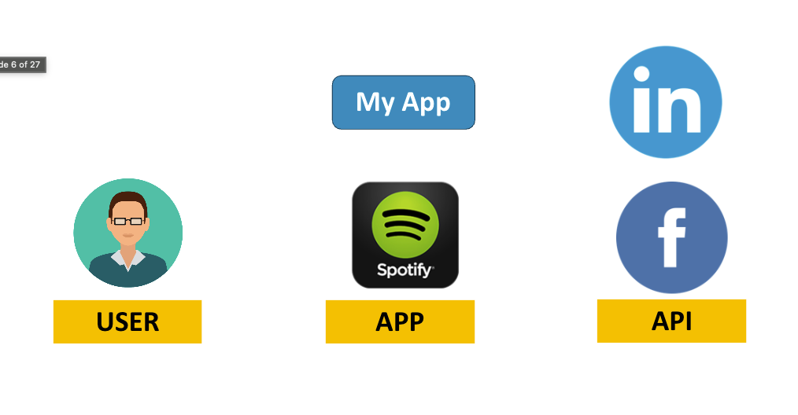
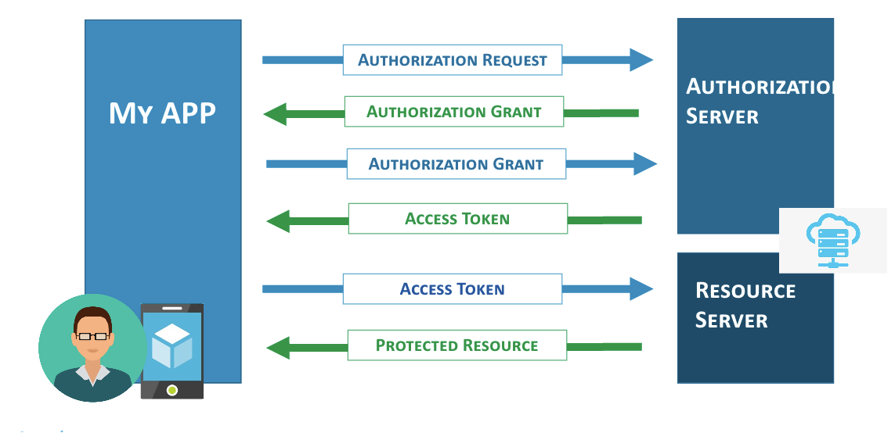
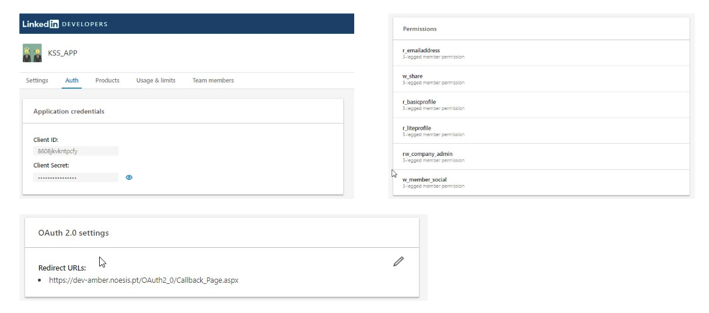
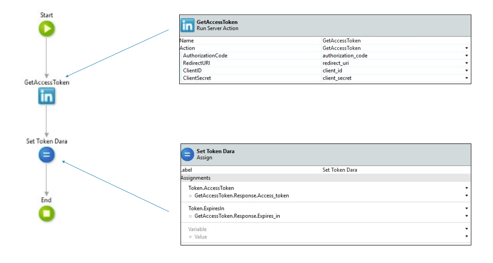
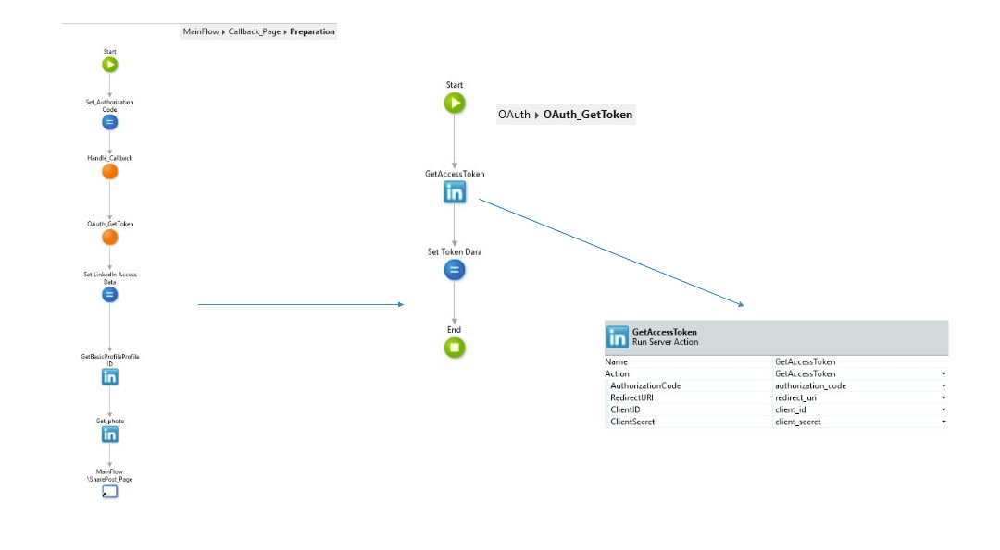
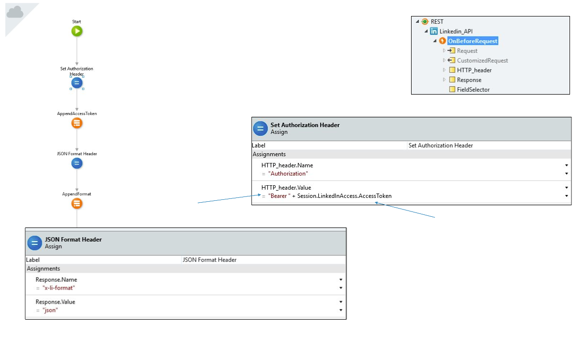

Every "Continue with Google" or "Log in with LinkedIn" button on the web is powered by the same idea: letting an application act on your behalf without ever handing it your password. That idea is OAuth 2.0 — a delegation protocol, not a login system, even though it's most often seen wearing a login button's clothes.
What is OAuth 2.0?
Per its defining document, RFC 6749, OAuth 2.0 is a framework that lets a third-party application obtain limited access to an HTTP service, either on behalf of a resource owner through an approval step, or on the application's own behalf.
In plainer terms: OAuth 2.0 is a delegation protocol that lets people allow applications to access things on their behalf. It answers a narrower question than login forms suggest — not "who are you," but "what is this application allowed to do for you."
Authentication vs authorization
The two are easy to conflate because OAuth flows often start with a login screen, but they solve different problems:
- Authentication — who you are.
- Authorization — what you can do.
When a LinkedIn consent screen lists permissions like "use your name and photo" or "post, comment and like posts on your behalf", that's the authorization half — the user deciding what the requesting application may do, after LinkedIn has already authenticated them.
The three roles
Every OAuth 2.0 exchange involves three parties:
- User (resource owner) — the person granting access.
- App (client) — the application requesting access on the user's behalf.
- API (resource server, behind an authorization server) — the service holding the protected data, such as LinkedIn.

A common misconception is that logging into an app "with LinkedIn" means that app now stores the user's LinkedIn username and password. It doesn't — and it's worth stating plainly: passwords are never exchanged between servers within an OAuth 2.0 framework. The app only ever receives a token, scoped to specific permissions, that LinkedIn itself issued.
How the workflow fits together
At a high level, three parties exchange four artifacts:
- The app sends an authorization request to the authorization server.
- The authorization server returns an authorization grant once the user approves.
- The app exchanges that grant for an access token.
- The app presents the access token to the resource server and receives the protected resource.

The rest of this article walks through the most common way of producing that sequence: the Authorization Code flow, also called 3-legged OAuth because it involves the user's browser, the app's server, and the authorization server as three distinct legs of the exchange.
Why this came up
The concrete case behind this article was rSource, a recruitment application whose users wanted to publish job announcements directly to LinkedIn without leaving the app. LinkedIn's own connector for the platform was heading toward deprecation, which meant implementing the OAuth 2.0 flow directly against LinkedIn's API.
The Authorization Code flow, step by step
Step 1 — Configure the application
Everything starts on LinkedIn for Developers: register a new application, note its Client ID and Client Secret, request the permissions (scopes) it needs — such as r_liteprofile, r_emailaddress or w_member_social — and register a callback URL on your own server that LinkedIn is allowed to redirect back to.

Step 2 — Request an authorization code
The app redirects the user's browser to LinkedIn's OAuth 2.0 authorization page, where the user either accepts or denies the requested permissions:
GET https://www.linkedin.com/oauth/v2/authorization
?response_type=code
&client_id={CLIENT_ID}
&redirect_uri={REDIRECT_URI}
&state={RANDOM_STRING}
&scope=r_liteprofile%20r_emailaddress%20w_member_socialTwo outcomes follow: if the user has never granted permission before (or the grant expired or was revoked), they see LinkedIn's consent screen and, once they accept, the browser is redirected back to redirect_uri. If a valid grant already exists, the consent screen is skipped and the redirect happens immediately.
The state parameter is worth keeping: it's an unguessable string the app generates and later verifies on the callback, and its job is to prevent cross-site request forgery against the callback endpoint.
Step 3 — Exchange the code for an access token
The callback URL receives an authorization code as a query parameter. The app's server then exchanges it directly with LinkedIn for an access token — this call happens server-to-server, so the Client Secret never touches the browser:
POST https://www.linkedin.com/oauth/v2/accessToken
Content-Type: application/x-www-form-urlencoded
grant_type=authorization_code
&code={AUTHORIZATION_CODE}
&redirect_uri={REDIRECT_URI}
&client_id={CLIENT_ID}
&client_secret={CLIENT_SECRET}A successful call returns a JSON object with an access_token and an expires_in value — at the time of this integration, LinkedIn issued tokens with a 60-day lifespan.
Step 4 — Make authenticated requests
From that point on, every call to LinkedIn's API carries the token in an Authorization header:
GET /v1/people/~ HTTP/1.1
Host: api.linkedin.com
Connection: Keep-Alive
Authorization: Bearer {ACCESS_TOKEN}Implementing it in OutSystems
The flow maps cleanly onto OutSystems building blocks. A dedicated OAuth module wraps the token exchange as a reusable server action, GetAccessToken, which takes the authorization code, redirect URI, client ID and client secret as inputs and returns the access token and its expiry:
ServerAction: OAuth_GetToken
Inputs: AuthorizationCode, RedirectURI, ClientID, ClientSecret
Outputs: AccessToken, ExpiresIn
1. GetAccessToken = Linkedin_API.GetAccessToken(
AuthorizationCode, RedirectURI, ClientID, ClientSecret)
2. Token.AccessToken = GetAccessToken.Response.Access_token
3. Token.ExpiresIn = GetAccessToken.Response.Expires_in
The calling flow is a straightforward Preparation on the callback page: read the authorization code LinkedIn appended to the URL, hand it to OAuth_GetToken, store the resulting access token in the session, and then use it to fetch whatever data the app needs — a basic profile, a photo — before moving on to the actual feature, such as a "share post" page.

On the REST consumer side, an OnBeforeRequest handler on the Linkedin_API REST entity sets the Authorization header on every outgoing call:
HTTP_header.Name = "Authorization"
HTTP_header.Value = "Bearer " + Session.LinkedInAccess.AccessTokentogether with an x-li-format: json header, since LinkedIn's API also accepts XML and needs to be told which format to return.

Where it's worth using OAuth 2.0
- Social login — letting users authenticate through an identity provider they already trust, without the app ever seeing a password.
- Posting or acting on the user's behalf — publishing content, sharing updates, or performing actions on a third-party platform, as with the LinkedIn job-posting case here.
- Scoped, revocable access — since permissions are explicit and grants can be revoked by the user at any time from the provider's own settings, without the app needing to be involved.
Closing thoughts
OAuth 2.0's value is easy to undersell because most people only ever see its login button. Underneath, it's solving a more specific problem: giving an application a scoped, revocable, password-free way to act on a user's behalf — a distinction that becomes obvious the moment an integration needs to do more than just confirm who someone is, like posting a job announcement to LinkedIn without ever touching a LinkedIn password.